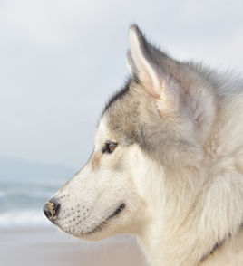
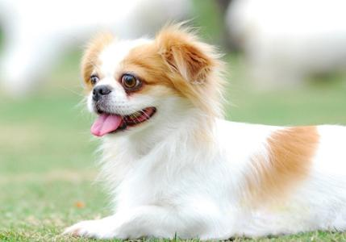
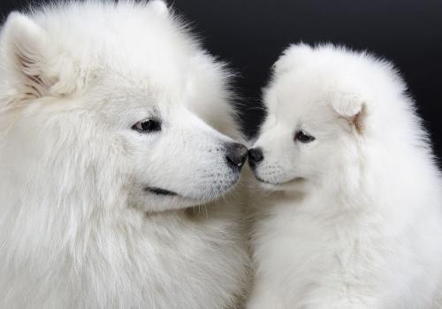

我的种类

哈士奇
西伯利亚雪橇犬（俄语：Сибирский хаски，英语：Siberian husky），常见别名哈士奇，昵称为二哈。西伯利亚雪橇犬体重介于雄犬20-27公斤，雌犬16-23公斤，身高大约雄犬肩高53-58厘米，雌犬51-56厘米，是一种中型犬。

秋田犬
秋田犬（あきたいぬ/アキタイヌ）是日本国犬，在日本是家庭宠物犬。秋田犬是日本最大的狐狸犬种，这一大型狐狸犬就算在欧洲和美国这种狐狸犬种众多的国家也颇为引人瞩目。在日本，秋田犬是具有国家历史文物意义的犬，属国犬，因“忠犬八公”闻名于世，是日本指定的国家天然纪念物中唯一的大型犬。该犬十分勇猛、感觉锐敏、忠诚且聪明，有关其忠诚的故事很多。

蝴蝶犬
蝴蝶犬（英文名为Papillon）又称蝶耳犬和巴比伦犬，因耳朵上的长毛直立装饰，犹如翩翩起舞的蝴蝶而得名。体高20-28厘米，体重3-5公斤，起源于十六世纪，原产于西班牙， [1] 是欧洲最古老的品种之一。

萨摩耶犬
萨摩耶犬（英文：Samoyed），别称萨摩耶，原是西伯利亚的原住民萨摩耶族培育出的犬种，一岁前调皮、灵动。 它机警、强壮、灵活、美丽、高贵优雅、乖巧可爱，有着非常引人注目的外表，有“微笑天使”的称号，也有着“微笑天使面孔，捣蛋魔鬼内心”之称，